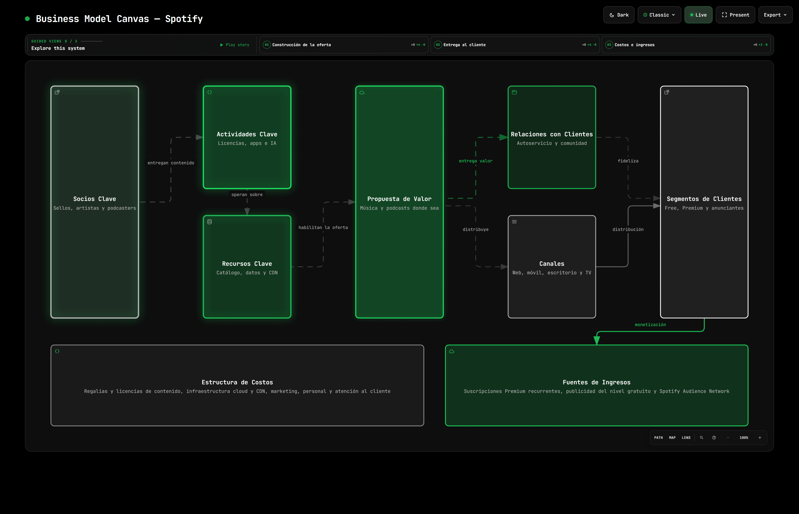
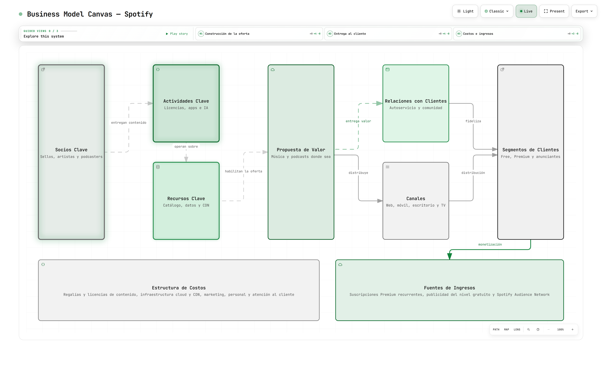
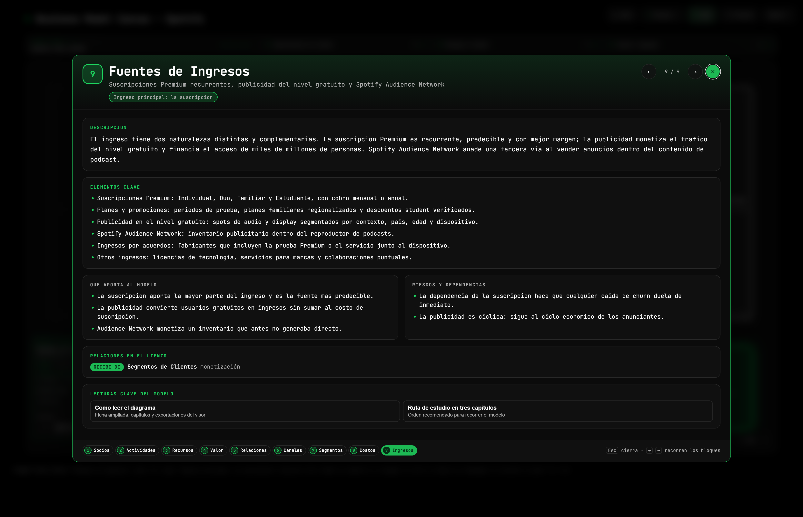
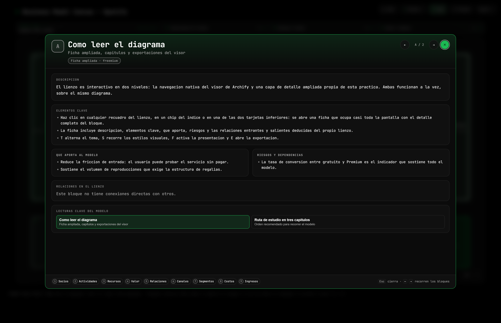
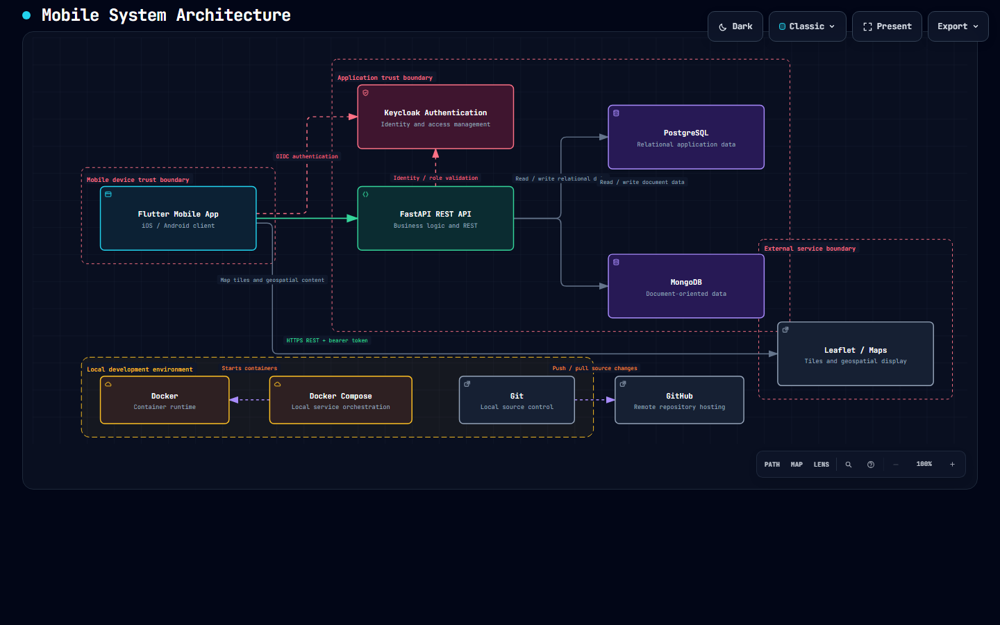
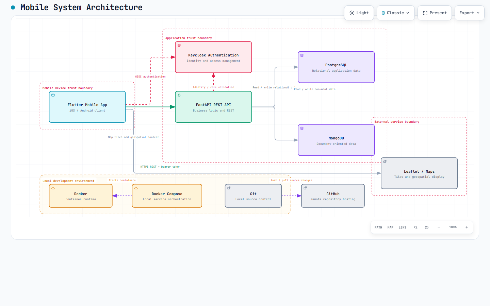
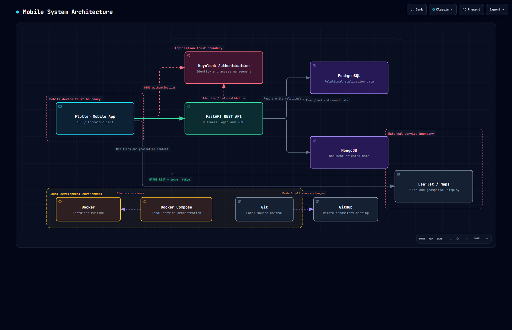
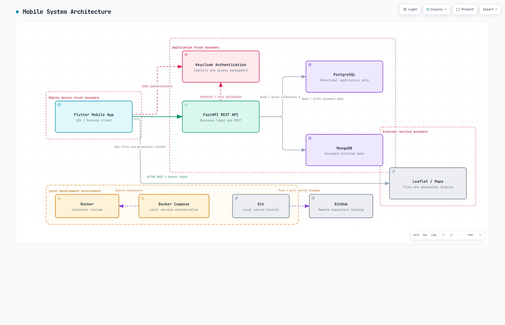

👨🎓 Datos del estudiante
Estudiante
Jesus Alejandro Artiaga Morales
Matrícula
220772 (10° A)
Docente
M.T.I. Marco A. Ramírez Hernández
Periodo Lectivo
Septiembre - Diciembre 2026
📋 Selecciona una práctica
Boceto de Arquitectura de Proyecto Integrador
Diagrama interactivo en HTML de la arquitectura del Proyecto Integrador generado con Archify.
🟢 ConcluidaBoceto de Modelo Canvas con Archify
Business Model Canvas interactivo de Spotify, mediante prompt iterado y validado con Archify.
🟢 Concluida🎵 Práctica 03 — Boceto de Modelo Canvas con Archify
En esta práctica se utilizó el agente de modelado arquitectónico Archify para generar un Business Model Canvas interactivo y autónomo en formato HTML para Spotify, servicio multiplataforma de streaming musical y de podcasts. El resultado cubre los 9 bloques del canvas, con paleta propia de Spotify y ficha ampliada al hacer clic en cada bloque.
🎯 Objetivos
Redactar y estructurar un prompt en lenguaje natural para que Archify genere el Business Model Canvas, revisar el modelo obtenido, editar el prompt para mejorar el resultado y documentar la entrega con buenas prácticas de organización y versionado.
🗺️ Diagrama interactivo
🧰 Tecnologías usadas
🖼️ Evidencias




📁 Visor de código
Selecciona un archivo…
📌 Conclusiones
La Práctica 3 integró el conocimiento previo de Archify con el modelado de negocios del Business Model Canvas. El ciclo prompt → modelo → revisión → mejora del prompt → entrega consolidó un flujo de trabajo reproducible que genera un diagrama profesional y documenta el proceso de forma ordenada.
🏗️ Práctica 02 — Boceto de Arquitectura de Proyecto Integrador
Se instaló y configuró el agente de modelado arquitectónico Archify, integrado con Codex CLI, para generar una representación visual del sistema del Proyecto Integrador: un diagrama interactivo y autónomo en HTML que muestra la estructura funcional, los servicios, las capas de seguridad y la relación entre componentes.
🎯 Objetivos
Instalar, configurar y ejecutar Archify junto con Codex AI para diseñar y publicar un boceto de arquitectura del Proyecto Integrador, con enfoque en la representación visual, claridad técnica y disponibilidad interactiva para revisión y presentación.
🗺️ Diagrama interactivo
🧰 Tecnologías usadas
🖼️ Evidencias




📁 Visor de código
Selecciona un archivo…
📌 Conclusiones
La Práctica 2 consolidó el proceso de análisis y diseño arquitectónico del proyecto integrador, integrando herramientas modernas de IA y diagramación para convertir una especificación técnica en una vista visual organizada, profesional y funcional.